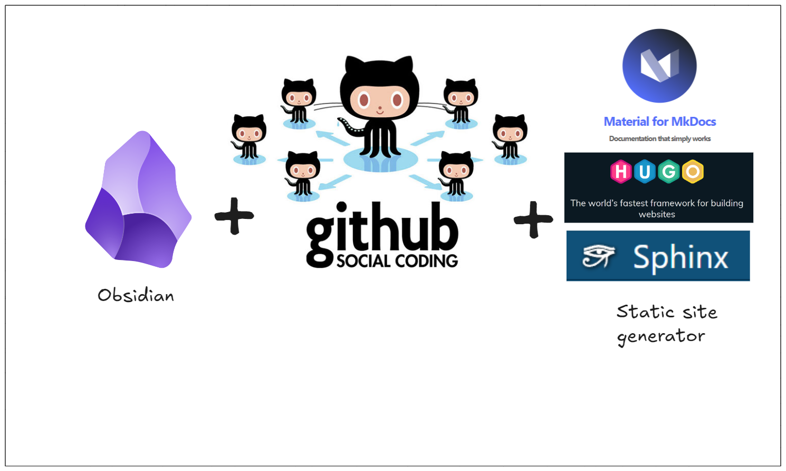
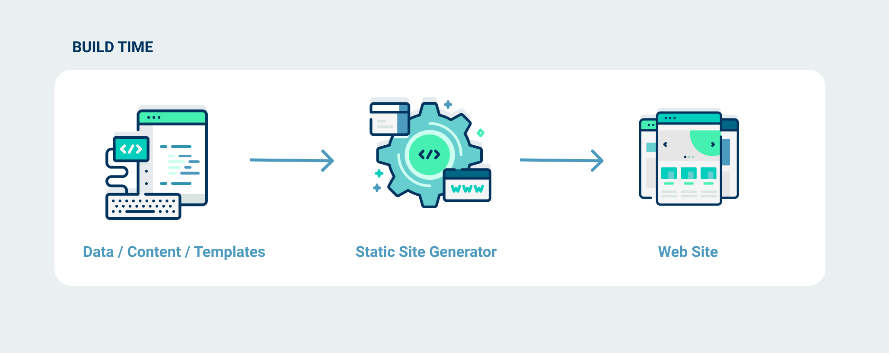
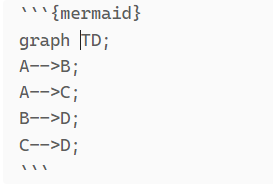

Начинаем мастер класс
Перейдем в подготовленный репозиторий ссылка
[ ] Создали новый репозиторий из шаблона.
[ ] test_your_might.md
[ ] push на github, показываем как все круто
[ ] показываем проект по мультимодальным моделям Демо совместной работы
[ ] рассказываем про генерацию статического сайта

Вот сравнение трех популярных генераторов статических сайтов из Markdown файлов:
Hugo
Sphinx
MkDocs
Характеристика |
Hugo |
Sphinx |
MkDocs |
|---|---|---|---|
Сайт пример |
|||
Язык |
Go |
Python |
Python |
Скорость сборки |
Очень быстрый |
Средняя |
Медленнее по сравнению с Hugo |
Поддержка Markdown |
Да (с использованием плагинов) |
Да (через MyST-Parser) |
Да (нативный синтаксис) |
Темы |
Большой выбор тем ссылка |
Большой одинаковых тем ссылка |
|
Расширяемость |
Высокая (плагины, шаблоны Go) |
Высокая (плагины, расширения Python) |
Средняя (плагины Python) |
Простота использования |
Простой для базовых сайтов |
Сложнее (MyST) |
Очень простой |
Целевая аудитория |
Разработчики, блоги, документация |
Разработчики, документация, научные проекты |
Документация, простые сайты |
Поддержка LaTeX |
Нет (нужно использовать внешние инструменты) |
Да (через LaTeX) |
Нет (нужно использовать внешние инструменты) |
Многоязычность c переключением языка в интерфейсе |
Да |
Да, сайт пример |
нет ссылка |
Контроль версий |
Да |
Да (через sphinx-multiversion) |
Нет |
Интеграция с CI/CD |
Да |
Да |
Да |
Поддержка GitHub Pages |
Да |
Да |
Да |
Поддержка PDF |
Нет (нужно использовать внешние инструменты) |
Да (через LaTeX, можно еще и генерить pdf на разных языках) |
Да (есть стандартный плагин ссылка) |
Поддержка формул LaTeX |
Да |
Да (через MyST-Parser) |
? |
Поддержка сложных сайтов |
Да (подходит для блогов, сайтов) |
Да (подходит для научных проектов) |
Ограниченная (лучше для документации) |
Поддержка тегов и категорий |
Да |
Да (через расширения) |
Ограниченная |
Поддержка автоматической документации |
Да (через плагины) |
Да (через autodoc) |
Ограниченная |
Поддержка интерактивной документации |
Да (через плагины) |
Да (через Breathe, Doxygen) |
Ограниченная |
Генерируем статичный сайт на Sphinx
Установка Sphinx
Устанавливаем Sphinx: Убедитесь, что у вас установлен Python, затем установите Sphinx через pip:
pip install sphinx
Создаем проект Sphinx: Перейдите в корневую папку вашего репозитория и выполните команду:
sphinx-quickstart
Следуйте инструкциям, чтобы настроить базовый проект Sphinx.
Настройка Sphinx для работы с Markdown
По умолчанию Sphinx использует reStructuredText (reST), но вы можете настроить его для работы с Markdown с помощью расширения MyST-Parser.
Установим MyST-Parser**:
pip install myst-parser
Включаем MyST-Parser в conf.py**:
Откройте файл conf.py и добавьте myst_parser в список расширений:
extensions = [
'myst_parser',
]
Настраиваем поддержку Markdown:
В файле conf.py добавьте следующие строки:
source_suffix = {
'.rst': 'restructuredtext',
'.md': 'markdown',
}
Темы: Будем использовать тему для Sphinx, например,
sphinx_rtd_theme:
pip install sphinx_rtd_theme
Затем добавьте тему в conf.py:
html_theme = 'sphinx_rtd_theme'
Многоязычность: Если вам нужно поддерживать несколько языков, Sphinx поддерживает многоязычность. Вы можете настроить язык в
conf.py:language = 'ru'
Перенос файлов из Obsidian в Sphinx
Создайте папку для документации: Поместите ваши Markdown файлы из Obsidian в папку
sourceвашего проекта Sphinx. Например:source/ ├── index.md ├── about.md └── subfolder/ └── another.mdСоздайте индексный файл: В папке
sourceсоздайте файлindex.rst(илиindex.md), который будет служить главной страницей. Например:
Генерация статического сайта
Сгенерируйте HTML: Выполните команду для генерации статического сайта:
sphinx-build -b html source _build/html
Проверьте сайт: Перейдите в папку
_build/htmlи откройте файлindex.htmlв браузере, чтобы увидеть ваш сайт.
Дополнительные настройки
Рендеринг формул Latex
myst_enable_extensions = [
"dollarmath", # Включает поддержку формул в двух долларах
]
mathjax_path = "https://cdn.jsdelivr.net/npm/mathjax@3/es5/tex-mml-chtml.js"
Рендеринг Mermaid диаграмм
Устанавливаем расширение через pip:
pip install sphinxcontrib-mermaid
Настройка Sphinx
Откройте файл conf.py в вашем проекте Sphinx.
Добавьте sphinxcontrib.mermaid в список расширений:
extensions = [
'sphinxcontrib.mermaid',
]
Настройте параметры Mermaid (опционально): Вы можете настроить параметры, такие как URL для загрузки библиотеки Mermaid или другие настройки. Например:
mermaid_params = [
'--theme', 'forest', # Устанавливает тему для диаграмм
'--width', '100%', # Устанавливает ширину диаграмм
]
Использование Mermaid диаграмм
Теперь вы можете встраивать диаграммы Mermaid в ваши документы. Для этого используйте директиву mermaid.
Пример использования в Markdown (с MyST-Parser):
Если вы используете Markdown, включите поддержку MyST-Parser:
extensions = [
'myst_parser',
'sphinxcontrib.mermaid',
]
Затем используйте синтаксис MyST для встраивания диаграмм: 